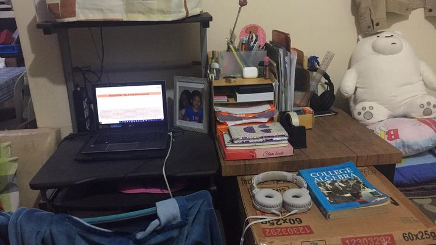

REFLECTION: "My Online Class Journey"
Due to the current world health crisis, many Filipino students are compelled to engage in Massive Open Online Course (MOOC) in order to continue with their studies, and the concept of ubiquitous learning (that is, learning anywhere, everywhere, anytime and every time) has been realized sooner than expected for many. As a student engaged in online learning, I would like you to reflect on your current situation as a learner. Write about the challenges you encounter every day, the funny moments you experienced, and personal suggestions as to how the learning process can be improved. You may also take a picture of your study room or take a screenshot of fun moments with your classmates etc.
Online learning is fun, not as fun as face to face but still fun but as easy as it sounds. Online learning can have it's complications like; no internet or electrcity, broken video cams or microphones and etc. I did experience most of these problems for example I could not join class because there was a power outage in put place, or I had no internet, or something was wrong with my laptop, all of these i have experienced. Not all kids have gadgets or money to have good internet so they do modular learning intsead but it's not the same without a teacher helping you. So it's really hard but what can we do because of the COVID 19 virus it is too dangerous to go to school. The thing that makes it fun is all the online activities you can with you classmates. I remember we would have these online quizez in the internet and it was so fun! There was also some blooper moments from my classmates and even me that was really funny. ofcource this can't beat the face to face classes but does not mean it's not fun. Things that can improve is maybe in exams and activities, there is always gonna be errors during exams wether it's Google Classroom or Edmodo but over all online class is great.
